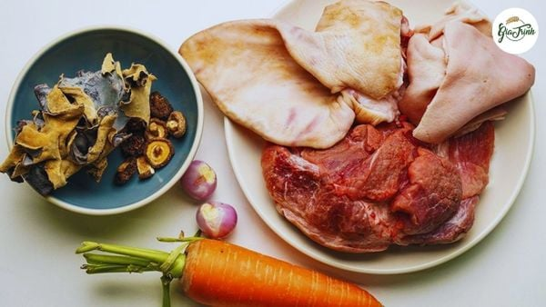
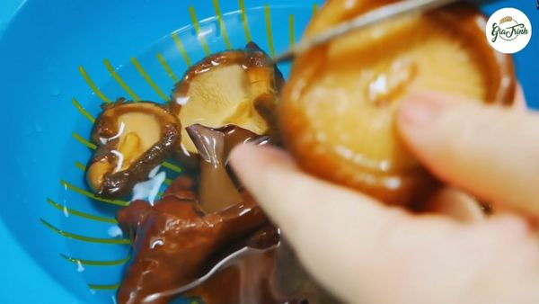
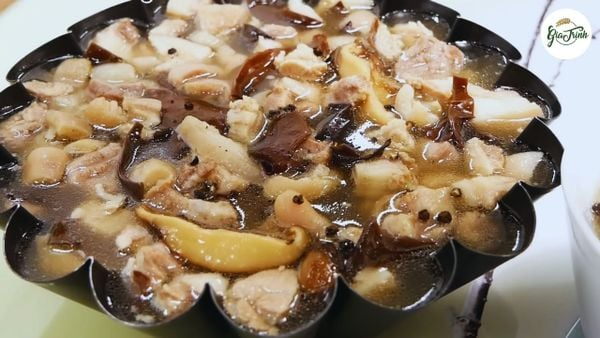

Chân giò đã rút xương: 300g
Tai heo: 400g
Nấm hương, mộc nhĩ: mỗi loại 50g
Bắp hạt (tuỳ theo sở thích): 50g
Cà rốt: 100g
Gia vị: muối, hạt nêm, bột ngọt, nước mắm, tiêu, hành, tỏi,...
- Ngâm nấm hương và mộc nhĩ vào nước ấm trong nước cho đến khi nở đều, sau đó rửa sạch và thái sợi mỏng theo ý thích (không nên thái quá nhỏ, v
- Làm sạch lông, rửa kỹ và để ráo thịt chân giò và tai heo. Tiếp theo, bạn bắc một nồi nước, cho hành tím đã lột vỏ và gừng đã cắt lát vào nồi đun sôi. Khi nước bắt đầu sôi, cho thịt và tai heo vào chần khoảng 5 phút rồi vớt ra ngay, cho vào tô nước đá lạnh để thịt giòn và giữ màu trắng. Sau đó, vớt thịt ra, cắt thành khúc nhỏ, tai heo thì thái thành sợi.

Cho thịt đã sơ chế vào tô, sau đó ướp với các gia vị gồm 1 muỗng canh đường, 1 muỗng canh hạt nêm, 1 muỗng cà phê bột ngọt, 1/2 muỗng cà phê muối, 1 muỗng cà phê tiêu. Trộn đều và để thịt ngấm gia vị trong khoảng 30 phút.

- Phi thơm hành và tỏi băm trong một chút dầu ăn. Sau khi hành tỏi dậy mùi, cho thịt vào nồi, xào đến khi thịt săn lại. Tiếp theo, cho nước vào nồi sao cho nước ngập hết thịt, đun sôi. Lúc này sẽ xuất hiện bọt trên mặt nước, bạn phải thường xuyên vớt bọt để nước trong và thịt đông sau khi hoàn thành sẽ đẹp mắt hơn.

- Khi thịt đã chín mềm, bạn cho nấm hương, mộc nhĩ, cà rốt cắt nhỏ và bắp vào nồi, đun thêm cho đến khi nước trong nồi rút đi một phần, chỉ còn khoảng 2/3 lượng nước ban đầu. Sau đó, bạn nêm nếm lại gia vị cho vừa ăn rồi tắt bếp

Trong khi đợi thịt đông lại, bạn xếp cà rốt cắt lát mỏng, ớt, ngò rí và hành lá vào tô. Sau đó, cho phần thịt đã nấu vào hộp, khuôn hoặc tô rồi đặt vào ngăn mát tủ lạnh trong khoảng 4-5 tiếng để thịt đông lại hoàn toàn. Nếu thời tiết lạnh, bạn có thể để thịt ở nhiệt độ phòng và thịt sẽ tự đông.
HƯỚNG DẪN CÁCH LÀM CHI TIẾT TẠI ĐÂY.
Món thịt đông này sẽ càng trở nên thơm ngon khi ăn kèm với muối tiêu và các loại dưa chua, làm món ăn thêm phần đặc sắc và kích thích vị giác.
12A4_N1_D2
Ngày cập nhật nội dung gần nhất: 19/01/2026
Tham khảo từ các nguồn như: Chatgpt.com, amthucvn.com, google.com, giatrinhbakery.com.vn, ...